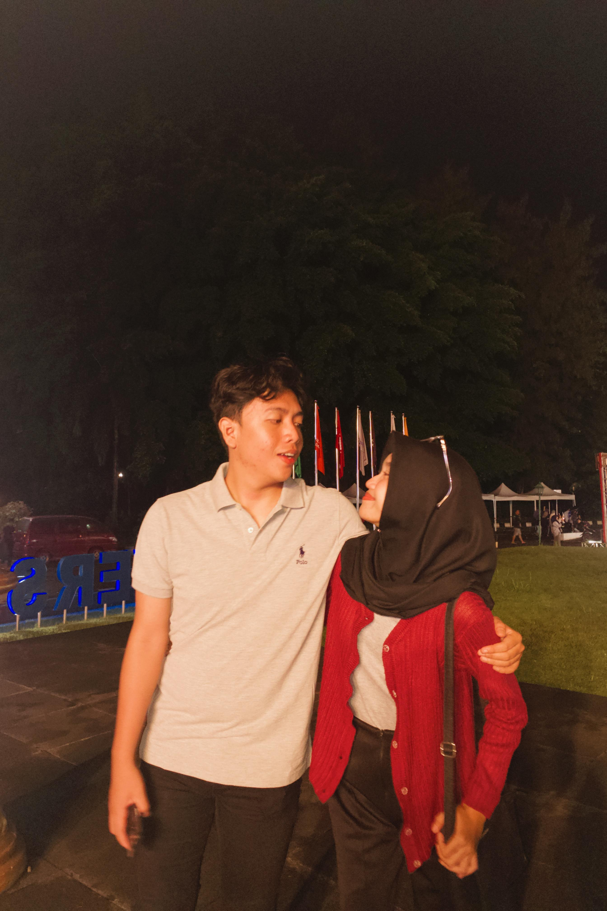

Kenangan



Dari: Pacarmu Anas ❤
Sayaaangkuuu, selamaaatt yaaa!! 🎉💖 Akhirnyaaa, kerja praktiikk yang kamuuu perjuangkaaan selaaama ini selesai jugaaa! Akuu lihaaat sendiriii gimaana kamuuu berjuaanngg darii awaaal, gimaana kamuuu capeeekk, begadaaanggg, bahkan kaaadanggg sampee ngerasaa mauu nyeraaahh. Tapii aku taaauuu, kamuuu itu oranggg yanggg kuattt dan hebattt, dann hari iniii kamuuu buktiin ituuu semuaaa!! 🥰 Akuu seneeengggg bangett bisaaa neemenin kamuuu, bantuuinnn semampuuu aku, dann liatt sendiriii setiaaappp langkaahhh yang kamuuu laluiiinn. Buatt aku, bukaaann cuman hasil akhirnyaa yangg bikinn aku banggaaa, tapii perjalaaannaann yang kitaa lewaaatiiin barraang-baranggg. Kamuuu nggakk sendiriaaann, sayaaangkuu, aku selaluuu adaaa dii siniii buat dukunggg dann neemenin kamuuu, sekaaranggg dann nantiii. Semogaaa iniii jadiii awaaalll dariii banyakkk keberhaasiillan yangg bakal kamuuu raaiiihhh. Akuu yakinnn, masaa depannn kamuuu bakal ceeraahhh karenaaa kamuuu itu luaarr biasaaaa!! Jangannn pernaahh raguu sama diriii kamuuu sendiriii yaaa, karenaa aku percayaa sampeee bangeeett sama kamuuu sepenuhnyaaa! Akuuu sayaaaangggg banggeett samaaa kamuuu!! Lovee youuu so muuuchhh!! ❤️😘.
Ya Allah, terima kasih atas semua rahmat dan pertolongan-Mu yang telah mendampingi langkahnya hingga hari ini. Engkau telah memberinya kekuatan untuk menyelesaikan kerja praktiknya dengan baik, dan aku bersyukur bisa menyaksikan setiap perjuangan dan usahanya. Ya Allah, aku memohon, lancarkanlah setiap langkahnya ke depan. Berikanlah dia kemudahan dalam menyelesaikan studinya, keberkahan dalam ilmunya, serta jalan yang terang untuk masa depannya. Jadikanlah semua usahanya bernilai kebaikan, dan bimbinglah dia menuju kesuksesan yang Engkau ridhoi. Aku juga berdoa agar Engkau selalu menjaga kesehatannya, melapangkan hatinya saat menghadapi tantangan, serta memberinya kebahagiaan dalam setiap langkah hidupnya. Biarkan aku terus berada di sisinya, mendukung dan menyayanginya dengan sepenuh hati. Semoga semua impian dan harapan yang ia perjuangkan bisa terwujud dengan indah. Aamiin ya Rabbal ‘Alamiin. 🤲💓.
Sayangkuu, seminar kerja praktikmu memang sudah selesai, tapi perjalananmu masih panjang, dan aku tahu kamu akan menghadapi banyak hal luar biasa di depan! Aku berharap ini bukan sekadar akhir dari satu tahap, tapi juga awal dari babak baru yang lebih besar dalam hidupmu. Tetaplah jadi dirimu yang selalu semangat, penuh tekad, dan nggak pernah menyerah. Apa pun yang akan datang nanti, aku yakin kamu bisa melewatinya dengan baik, seperti yang sudah kamu lakukan selama ini. Ingat ya, aku selalu di sini, mendukungmu di setiap langkah, percaya pada kemampuanmu, dan siap menemani setiap perjuanganmu. Jangan takut bermimpi lebih besar, sayang. Aku yakin suatu hari nanti, semua kerja keras dan usahamu akan membawa kamu ke tempat yang kamu impikan. Aku nggak sabar lihat kamu mencapai semua hal hebat yang menunggu di masa depan! Aku bangga dan sayang banget sama kamu! 💖✨.